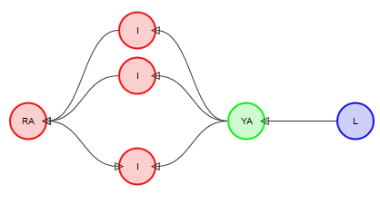
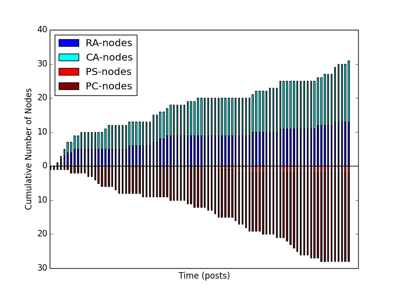
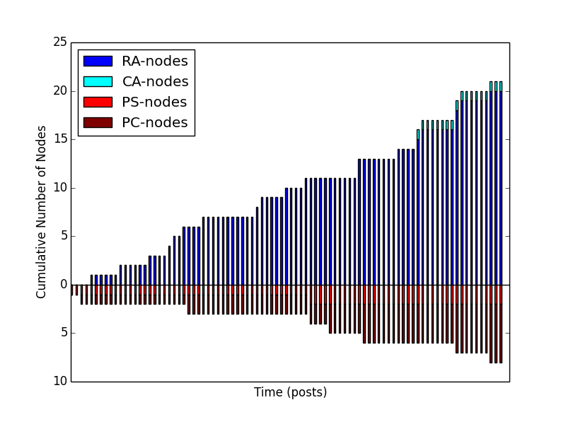
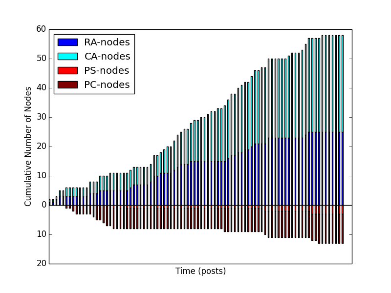
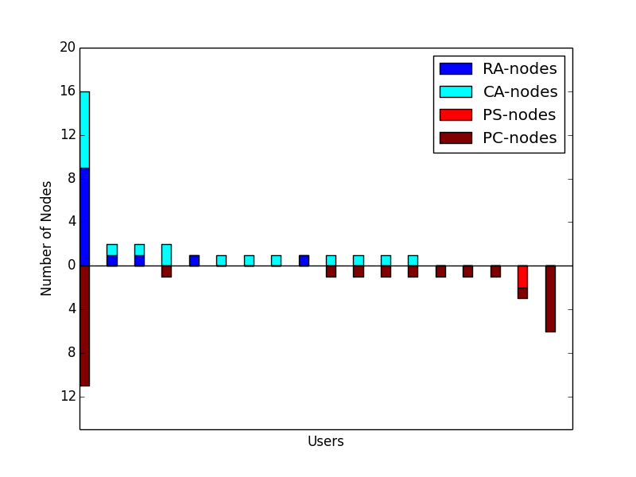
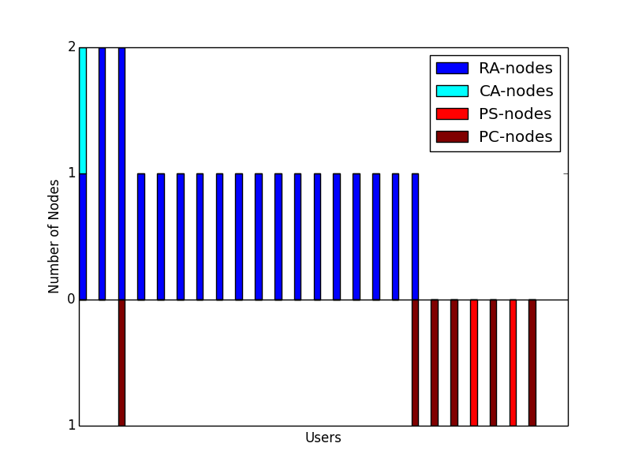
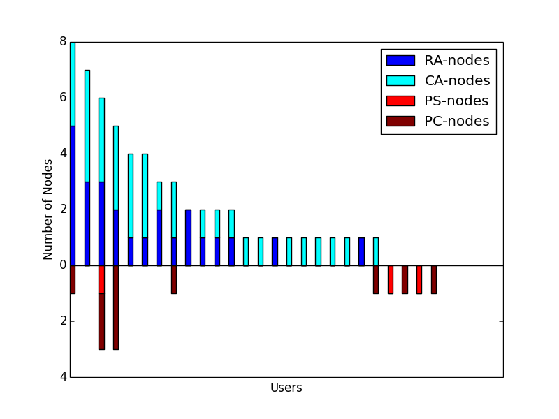

Argumentation on the Social Web
Use of Logical and Rhetorical Tactics within Eristic Argumentation
Tom Blount, David Millard and Mark Weal

Introduction
- Argumentation makes up an important part of human communication
- Social argumentation differs from formal argumentation
- Current models struggle to capture the social and rhetorical impact of arguments
Problem Space: The Good
- Social media is a rich opportunity for analysing "Big" argument structures
- Allows us to see how massive communities form and conduct discussions
Problem Space: The Bad
- Design of social spaces causing debate to stagnate (e.g. echo-chambers/filter bubbles)
- Widespread controversy and abuse (e.g. #GamerGate)
- Modelling these problems may help us solve them
Argumentation
- Current models focus on formal logic and reasoning
- Useful for AI/agent based system
- Less useful for modelling human beings
Dialectic/Eristic
- Dialectic: Attempting to solve a problem or discover truth
- Eristic: Quarrelling to "win"
Logic/Rhetoric
- Logic: Using "facts" to draw conclusions
- Rhetoric: Using knowledge of the audience
Existing Models: AIF
- Argument Interchange Format
- Represents argumentation as a directed graph
- Aims to link the concepts of natural language argumentation with abstract mathematical modelling
Existing Models: AIF

Existing Models: AIF+
Existing Models: SIOC
- Semantically-Interlinked Online Communities
- Cross-platform, cross-service representation of data from the social web
- Uses FOAF to link people to their online accounts
Existing Models: SIOC

Example: Attacks
"Alice isn't qualified to make that argument; she doesn't even have a PhD"
Example: Attacks
"Bob doesn't know what he's talking about - he's a ****ing idiot"
Example: Attacks
"**** off and die"
ASWO: Model
- Argumentation on the Social Web
- Ties together the AIF and SIOC frameworks
- Extends these to cover social argumentation
ASWO: Model

ASWO: Model

ASWO: Investigations
- Sampled a set of 270 posts from Twitter, Facebook and Reddit
- Annotated these posts using AIF/SIOC/ASWO
- Examined the use of logical and rhetorical tactics
Rhetoric over time: Twitter
Rhetoric over time: Facebook
Rhetoric over time: Reddit
Rhetoric per user: Twitter
Rhetoric per user: Facebook
Rhetoric per user: Reddit
ASWO: Analysis
- Even a subset of social/rhetorical tactics are prevalent in online argumentation
- May be possible to draw some correlations between post content and tactics
Future work
- Introduce further ASWO extensions
- Examine distribution of rhetorical tactics on different social media platforms
- Examine how different tactics alter a user's perception of the argument as a whole
Conclusion
- Current models of argumentation do not capture rhetorical force or social impact
- Social media is an excellent opportunity to analyse argumentation on a large scale
- The social (and anti-social) aspects of argumentation cannot and should not be ignored
Questions?
Tom Blount - tb12g09@ecs.soton.ac.uk - @Tom_Blount
References
Breslin, J. G., Decker, S., Harth, A., and Bojars, U. (2006). SIOC: an approach to connect web-based communities. International Journal of Web Based Communities, 2(2):133–142.
Chesñevar, C., McGinnis, J., Modgil, S., Rahwan, I., Reed, C., Simari, G., South, M., Vreeswijk, G., andWillmott, S. (2006). Towards an argument interchange format. Knowledge Engineering Review, 21(4):293–316.
Gilbert, E., Bergstrom, T., and Karahalios, K. (2009). Blogs are echo chambers: Blogs are echo chambers. 42nd Hawaii International Conference on System Sciences, HICSS’09, pages 1–10. IEEE.
Jane, E. A. (2014). "Your a Ugly, Whorish, Slut" Understanding E-bile. Feminist Media Studies, 14(4):531–546.
Kerferd, G. B. (1981). The Sophistic Movement. Cambridge University Press.
Chesñevar, C., McGinnis, J., Modgil, S., Rahwan, I., Reed, C., Simari, G., South, M., Vreeswijk, G., andWillmott, S. (2006). Towards an argument interchange format. Knowledge Engineering Review, 21(4):293–316.
Gilbert, E., Bergstrom, T., and Karahalios, K. (2009). Blogs are echo chambers: Blogs are echo chambers. 42nd Hawaii International Conference on System Sciences, HICSS’09, pages 1–10. IEEE.
Jane, E. A. (2014). "Your a Ugly, Whorish, Slut" Understanding E-bile. Feminist Media Studies, 14(4):531–546.
Kerferd, G. B. (1981). The Sophistic Movement. Cambridge University Press.